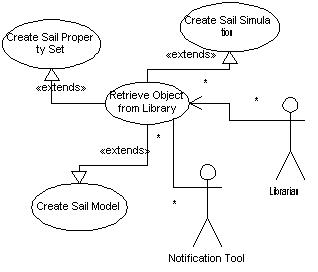

|
|
SailAway Project |
| Diagram |  |
|---|---|
| Name | Retrieve Object from Library |
| Iteration | Finished |
| Summary | Any time the User opens a storable object to make it their current working copy, the System will offer objects from remote libraries which are registered for use. The User will be made aware of remote object available to them and in which libraries these objects happen to be stored. If the User picks an object for retieval, the object will be requested from the local or remote library as appropriate and delivered to the System. |
| Basic Course of Events |
|
| Alternative Paths | If the system is not configured to make use of a remote libary, it will search the user's local environment for an existing local library and present only those objects for choosing. The user will be made aware, though, that no remote libraries are being used. |
| Exception Paths |
If the system is configured for a remote libary and after trying to retrieve
an object the registered library reports problems, the system will hunt for
another registered libary that contains the object and issue the task
request again.
If the system is configured for a libary and after trying to retrieve an object all registered libraries report problems, the system will revert to a local library configuration and proceed. If the object being requested in not in the local library, the System will report an error to the User through the Notification tool. |
| Extension Points | . |
| Trigger | The User triggers this case by issuing a command at a user interface to retrieve a storable object. |
| Assumptions | The System must be able to find a Library somewhere whether it be remote or local. Anything short of this is an error condition. |
| Preconditions |
|
| Postconditions | The System retrieves objects for use by the User with later commands. |
| Related Environment Rules | 3, 4, 5 |
| Author | Dr Alfred W Differ |
| Date |
2002/01/30 - Facade 2002/01/30 - Filled 2002/02/08 - Focused 2002/02/15 - Finished |